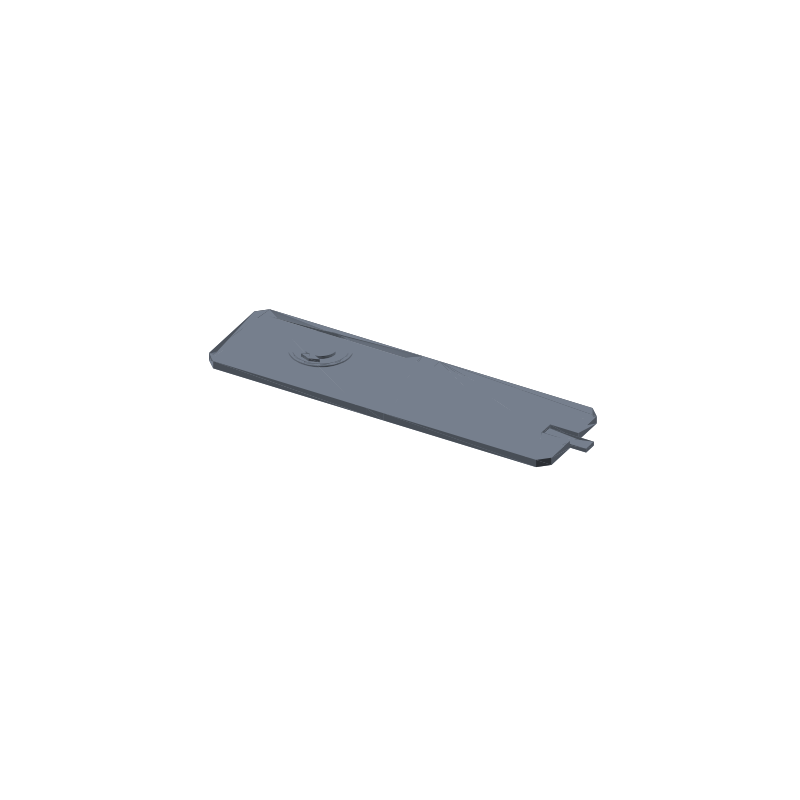

Quantum bookmark STL, a closed notebook with a ribbon, 146.5 × 40 × 4.2 mm
Flat bookmarks slide out and get lost in the book they were holding. This one is a closed hardback notebook, 140 × 40 mm and 3 mm thick at the covers, with a cloth style ribbon seated in a notch at the page edge. Close the cover on the ribbon and the tail hangs 6.5 mm past the page edge, the way a lab notebook holds your place with a sewn ribbon.
The cover emblem is pure geometry: a circle head with a 1.5 mm tassel hole, a kite shaped body, raised 1.2 mm inside a 0.6 mm field ring. No likenesses, no scans, no show assets. The whole thing prints in one pass, flat on the plate: covers and ribbon base down, emblem and ring already positioned on the front cover, vertical walls only, no supports, no bridges.
This page carries the measured spec sheet: dimensions taken from the exported mesh, every edge counted, the volume cross checked against an analytic sum, and preview renders, so you can check the numbers before you slice.

The STL is one material and prints in one color; the renders shade the walls by light angle so the raised emblem and the notch read as geometry, not paint.
Spec sheet, measured from the mesh
| Spec | Value |
|---|---|
| As exported | One connected solid notebook 146.5 × 40 × 4.2 mm: a 140 × 40 × 3.0 mm book plus the 1.2 mm raised emblem and the 6.5 mm ribbon tail, 4 mm chamfered outer corners |
| Construction | Two 3 mm covers and a 7 mm spine unioned into one solid; the ribbon anchor is buried 1.5 mm under the notch floor and welds into the back cover |
| Emblem | Circle head 6 mm radius with a 1.5 mm tassel hole and a kite body, raised 1.2 mm on the front cover inside a 0.6 mm field ring from 10.2 to 11.6 mm radius |
| Ribbon | 5.4 × 1.6 mm seated in a 6 mm wide, 11.5 mm deep notch at the page edge, 0.3 mm side clearance, 6.5 mm tail past the cover |
| In use | The closed notebook lies between the pages and the ribbon tail hangs out at the page edge, like the sewn ribbon of a lab notebook |
| Volume | 16.85 cm³ mesh vs 16851.71 mm³ analytic, delta 0.0001%, ≈ 21 g PLA solid, less at typical infill |
| Flat on one plate, covers and ribbon base down, emblem and ring already on the cover, vertical walls only, no supports, no bridges; about 1 to 2 h at 0.2 mm layers (geometry estimate) | |
| Mesh check | Watertight, winding consistent, euler 2, genus 0, one body, 2318 faces, 1161 vertices, all 3477 edges shared by exactly 2 faces (trimesh 5.1.0, 2026-09-10) |
| Files | STL (113 KB) and 3MF (27 KB) plus the parametric generator script gen_bookmark17.py |
| Params | book L 140, W 40, cover_t 3, spine_w 7, chamfer 4; notch w 6, depth 11.5, ribbon_w 5.4, ribbon_t 1.6, tail_out 6.5, anchor_embed 1.5; emblem head_r 6, relief_t 1.2, ring 10.2 to 11.6, ring_t 0.6 |
| License | CC-BY 4.0 on MakerWorld; royalty free, no AI training, direct from us |
How the solid was verified
The generator extrudes the front cover, back cover, spine, ribbon, emblem and field ring separately, then unions them into one solid with a manifold engine before anything is written. Parts that merely touch, coplanar and unwelded, fall apart into separate bodies the moment the file is reloaded, so the script asserts one body, euler 2, watertight and winding consistent at export time.
The shipped STL loads back with merged vertices as watertight, winding consistent, euler 2, genus 0, one body, is_volume true. The edge census counts 3477 edges and every one of them is shared by exactly 2 faces: zero non-manifold edges anywhere in the mesh. The ribbon holds because its anchor is buried 1.5 mm under the notch floor, so the union welds it into the back cover; the buried length is invisible and the seated look is unchanged.
The volume cross checks two ways. Trimesh measures 16.85 cm³ on the mesh. An independent sum from the 2D source polygons, cover area times 3 mm, emblem area times 1.2 mm, ring area times 0.6 mm, plus the ribbon length outside the book times 1.6 mm, comes to 16851.71 mm³. The two agree to 0.0001%, far inside the 1% gate.
Every face is either flat on the plate or a vertical extrusion, so nothing needs supports and there are no bridges. The emblem and the field ring print in place on the cover, 1.2 mm and 0.6 mm steps respectively.
Print notes
Print the file as exported, flat on the plate: closed covers with the ribbon notch already in the back cover outline, vertical walls, no overhangs, so the slicer needs no supports and no brim beyond plate adhesion. 0.2 mm layers and three perimeters are a reasonable default.
I have not test-printed this yet. If you print it, tell me how the ribbon notch came out. The knobs are in the generator: L, W, cover_t, spine_w and chamfer for the notebook, w, depth, ribbon_w, ribbon_t, tail_out and anchor_embed for the notch and ribbon, plus head_r, relief_t, the two ring radii and ring_t for the emblem.
Change any of those and rerun gen_bookmark17.py: the notch, the buried anchor and the chamfers recompute, and the script asserts one body, euler 2 and a volume within 1 percent of the analytic sum before it writes a new STL. A bigger notebook is a number change, not a redesign.
Honest limits
The 1 to 2 hour print figure is a geometry estimate from the mesh volume, not a timed print, and the bookmark is mesh verified but untested on a printer. The first thing to check on a real print is the ribbon: 1.6 mm thick and printed flat, it should flex off the plate without cracking at the weld line under the notch.
The notch leaves 0.3 mm of clearance per side of the ribbon. A squashed first layer can eat into that, so a fine first layer height is worth it here; if the ribbon still sticks, scrape the notch pass clean before seating it.
PLA is fine for a bookmark that lives between pages, but a car dashboard or a windowsill in direct sun can creep it. For a bookmark that rides in a bag all summer, print the same generator output in PETG.
Design and attribution
The notebook and emblem are an original fan made design drawn from scratch, taking their look from the physics notebook setting of Bunny Girl Senpai (Seishun Buta Yarou). The emblem is abstract geometry with no character likenesses, no show assets and no scans, and this design is not affiliated with or endorsed by the creators or rights holders of the series.
Where to get the files
The bookmark is staged on our MakerWorld account and goes public on our profile once it is submitted and clears review.
More printed organizers and bench tools, with a status table for the pool: 3D printed desk organizers and printable tools. The rebuild-everything approach, generator parameters per model side by side: parametric 3D printed tools.
Compare all 20 models by solid mesh volume in the STL volume ledger.
FAQ
How is the ribbon attached?
The ribbon anchor runs 1.5 mm under the notch floor, inside the back cover solid, so the boolean union welds the two into one body. No glue, no pin, it prints that way in place. The exported mesh reloads as one body with euler 2, which is the arithmetic proof that the ribbon and the cover share one surface. The tail hangs 6.5 mm past the page edge, enough to grab.
What actually holds the page?
The ribbon does, not the book shape. Close the cover on the 5.4 × 1.6 mm ribbon where it seats in the notch and the 6.5 mm tail sticks out at the page edge; pull the tail to open to the marked page. The closed notebook form gives the ribbon a rigid anchor and a flat 3 mm body that lies between pages without bowing the cover around it.
Can I resize it or change the emblem?
Yes. Edit the parameters in gen_bookmark17.py and rerun it: the notebook footprint (L, W, cover_t, spine_w, chamfer), the notch and ribbon (w, depth, ribbon_w, ribbon_t, tail_out, anchor_embed) and the emblem (head_r, relief_t, the two ring radii, ring_t). The script asserts one body, euler 2 and a volume within 1 percent of the analytic sum on every run, so a resized bookmark comes out with the same welds and the same guarantees.